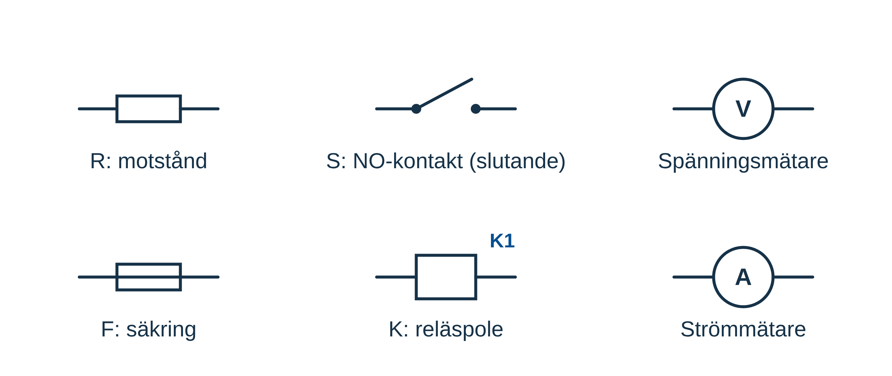
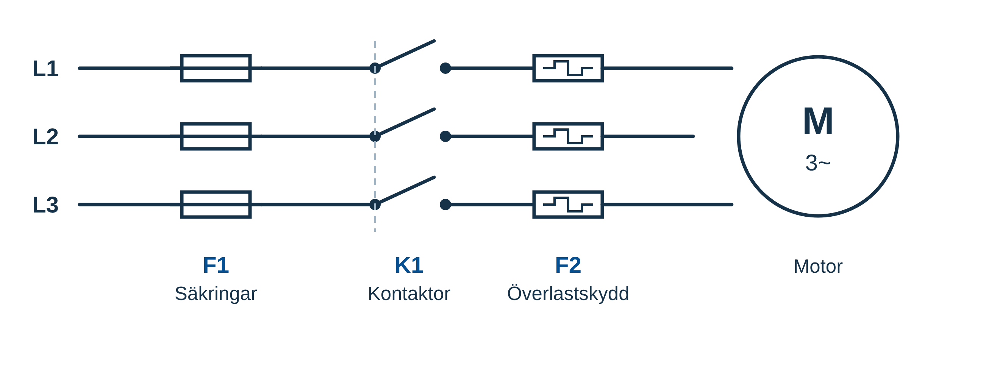
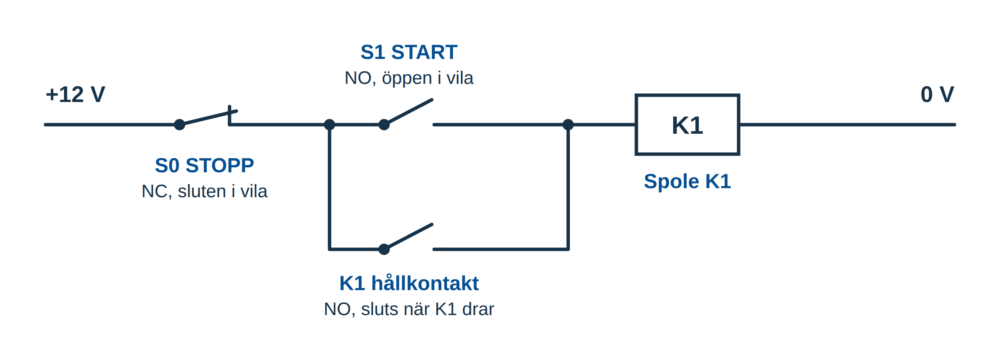
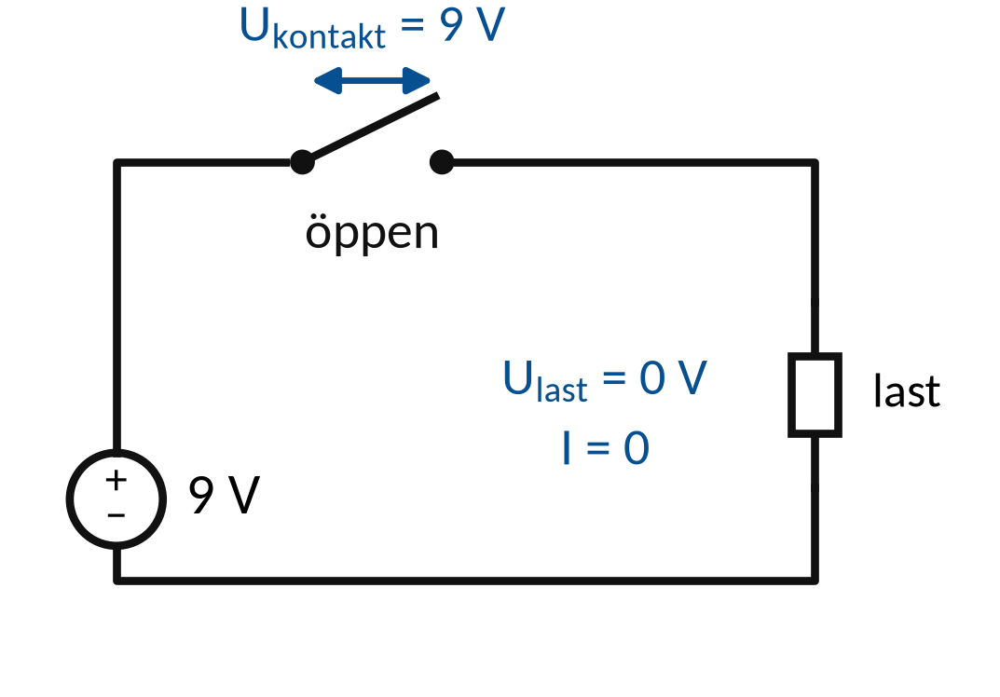
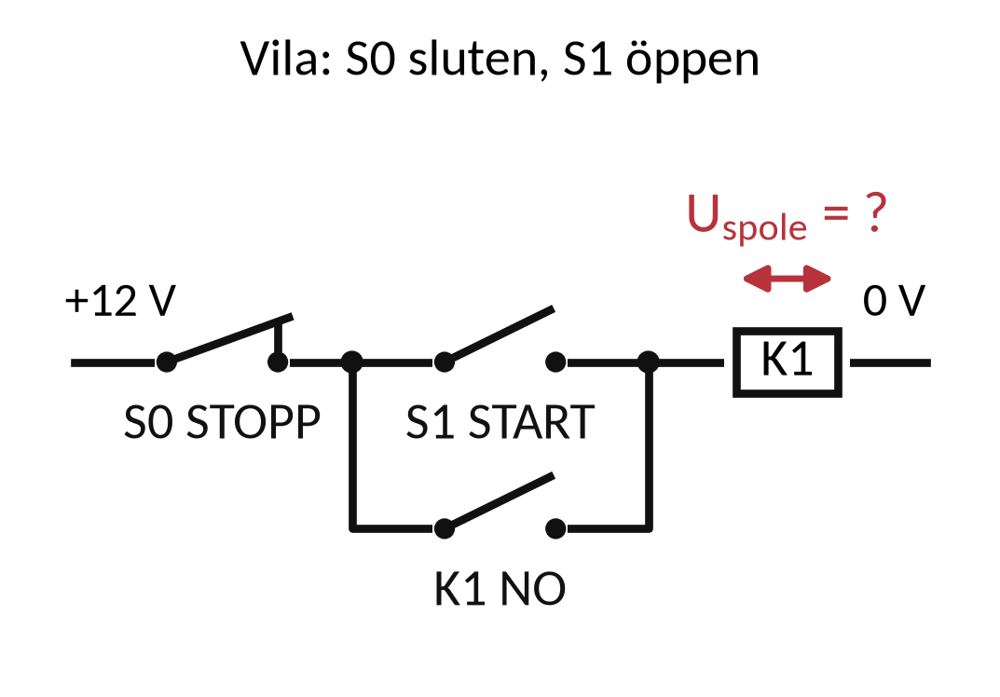
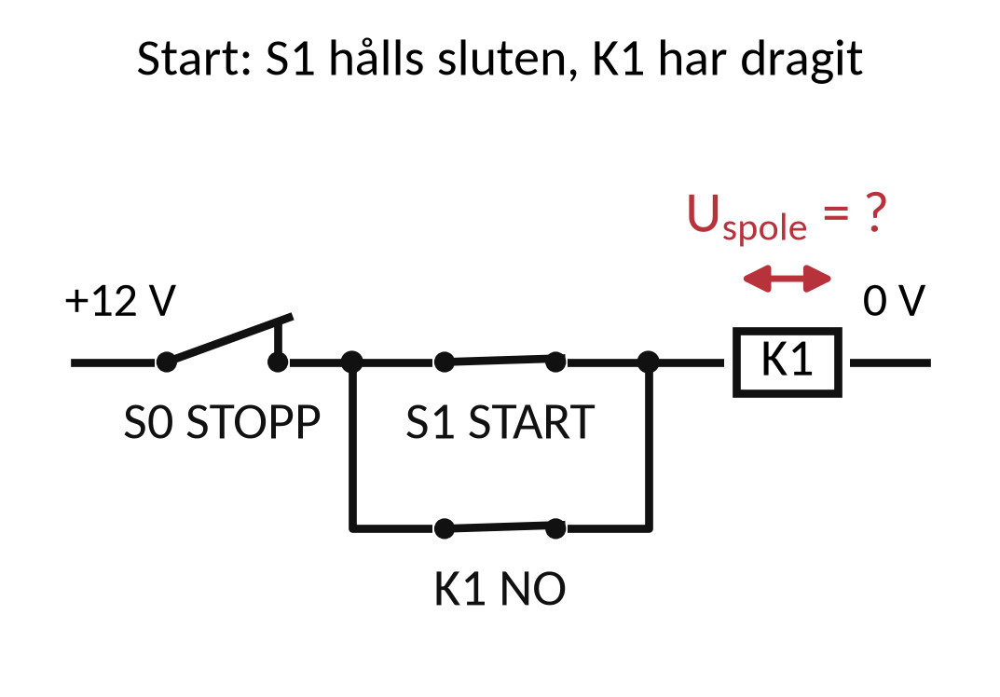
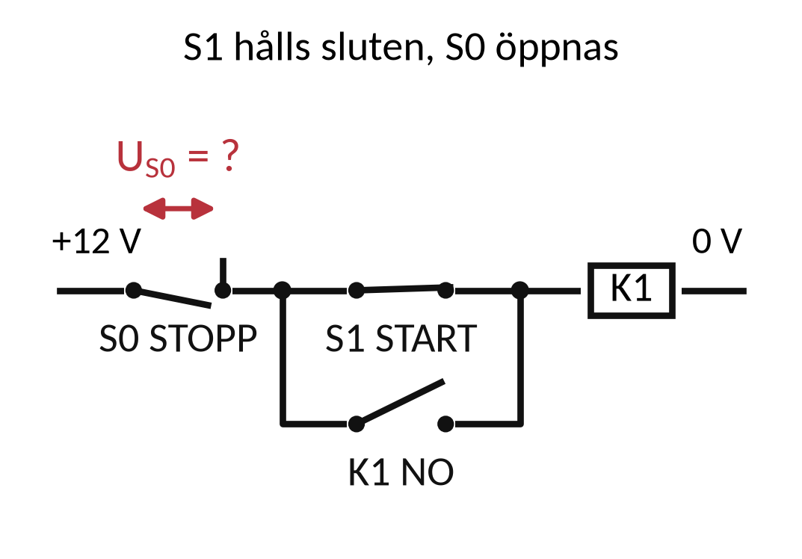

Vecka 43 · Del 3 av 4
Del 3: Elscheman och dokumentation
Vi pratar om: Genomgång av del 3 med era frågor (avsnitt 1–7)
Öppna presentationenPresentationen som PDF
Före lektionen läxa efter lektionen tisdag 20 oktober
Läs del 3 på egen hand och tryck på ”Jag har läst del 3” längst ned på sidan.
Gör övning 3.1–3.5 i del 3.
Öppna övning 3.1
Läxor efter lektionen
Gör övning 3.8–3.10 på delsidan. Ledtrådar och facit finns där.
Öppna övning 3.8Hållkretslabbet: välj ”Ny felmodul”, felsök det dolda felet och fyll i labbprotokollet. Protokollet är underlaget till felsökningsrapporten.
Öppna labben
På lektionen: övning 3.6 och 3.7 gör vi tillsammans.
1 Översikt
Det här ska du kunna
- följa en huvud- och styrströmsfunktion i ett schema.
- koppla symboler, beteckningar och mätpunkter till dokumentationen.
- ange de två mätpunkterna och driftläget för ett förväntat mätvärde.
Fundera först: Vad visar ett kretsschema som en lista över ledningsanslutningar inte visar lika tydligt? Svaret finns i teorin nedan.
Så gör du
- Läs teorin ett avsnitt i taget (7 korta avsnitt). Sist i varje avsnitt står vilka övningar du kan göra direkt.
- Följ exemplen med papper och räknare, steg för steg. Gissa nästa steg innan du läser det.
- Gör övningarna 3.1–3.10. Fastnar du: Ledtråd 1 visar vilket samband du behöver och var i teorin det förklaras. Ledtråd 2 visar hur du börjar och Ledtråd 3 exemplet som räknar samma sorts uppgift med andra tal. Öppna facit när du har ett eget svar.
- Lämna in veckans uppgifter: Veckans inlämning.
Så skriver du en lösning som går att följa
1. Givet och sökt
Skriv av värden, enheter och vad du ska bestämma.
2. Samband och villkor
Välj formel eller princip. Kontrollera koppling, driftfall och antaganden.
3. Uträkning och kontroll
Omvandla enheter, sätt in värden och tolka resultatet.
I resonemangsfall: koppla observation till en motiverad slutsats.
Lärarens presentation · PDF · Räknarhjälp · Formelblad
Förkortningar och beteckningar i den här delen (3)
- R
- resistans. Resistorns motstånd mot ström. Beror inte på frekvensen. Enhet: Ω (ohm).
- IEC
- Internationella elektrotekniska kommissionen (engelska: International Electrotechnical Commission). Ger ut internationella standarder för el, till exempel IEC 60092 om elinstallationer på fartyg.
- DC
- likström, likspänning (engelska: direct current). Ström eller spänning med samma riktning hela tiden, till exempel från ett batteri. På multimetern V⎓ eller DC.
2 Teori
Ett avsnitt i taget: öppna det, läs, och gör sedan övningarna som står sist i avsnittet. Formeln bredvid rubriken är det viktigaste i avsnittet.
1Så läses styrkretsenEn symbol visar funktion. En beteckning identifierar apparaten.
En symbol visar funktion. En beteckning identifierar apparaten.
NO är öppen och NC är sluten i opåverkat läge: ingen trycker och spolen är strömlös.
Kontakter i serie måste alla vara slutna för att det ska finnas en strömväg.
Kontakter parallellt ger alternativa vägar mellan samma två noder.
Öva nu: Övning 3.1
2Symboler och referenserSymboler visar komponenternas funktion.
Symboler visar komponenternas funktion.
IEC 60617 är referensen för grafiska symboler i elscheman.
Beteckningen identifierar objektet, till exempel apparaten K1.
Korsreferenser knyter samman spolen och kontakterna.
Figuren visar förenklade undervisningssymboler.

Öva nu: Övning 3.2
3Huvud- och styrströmTvå scheman: kraftvägen och villkoren för manövern.
Två scheman: kraftvägen och villkoren för manövern.
Huvudströmsschemat visar kraftvägen till lasten.
Styrströmsschemat visar villkoren för manövern.
Figuren är kraftdelens förenklade funktionsschema. F1 ger kortslutningsskydd, K1 kopplar matningen och F2:s överlastfunktion ska bryta motorns manöver.

4Hållkretsens funktionS0 i serie med (S1 parallellt med K1)
S0 i serie med (S1 parallellt med K1)
S0 är STOPP (NC). S1 är START (NO). K1 har en NO-hållkontakt.
K1-spolen matas när det finns en obruten väg från +12 V till 0 V.
Figuren är en förenklad funktionsskiss i vila. K1:s spole och kontakt tillhör samma apparat.

Öva nu: Övning 3.3, Övning 3.4, Övning 3.10
5Kretsschema och förbindningFunktion respektive fysisk förbindelse.
Funktion respektive fysisk förbindelse.
Kretsschemat beskriver den elektriska funktionen.
Förbindningsschemat visar anslutningarna mellan plintar och apparater.
En felsökare behöver kunna gå från K1 i funktionen till rätt apparat och anslutning i verkligheten.
Öva nu: Övning 3.5
6Mätpunkter och referensEtt spänningsvärde kräver två definierade punkter.
Ett spänningsvärde kräver två definierade punkter.
Ange driftläge och förväntat värde innan du kontrollerar.
Vad bör en öppen kontakt visa i ditt driftläge? I en enkel aktiv DC-kedja kan ett avbrott ta hela spänningen.
Tolka resultatet mot schemat och referenspunkten.
Öva nu: Övning 3.6, Övning 3.7, Övning 3.8
7Dokumentets statusAktuellt schema och faktisk anläggning ska stämma.
Aktuellt schema och faktisk anläggning ska stämma.
Ritningsnummer, revision och datum visar vilket underlag som används.
Ändringar behöver kunna följas från beslut till verifierad funktion.
Inlämning 3 bygger på hållkretsen: nödstoppet, lampan, kretsens fem lägen och en felsökningsrad.
Öva nu: Övning 3.9
3 Exempel
Följ exemplet steg för steg med papper och räknare. Försök själv med nästa steg innan du läser det. Övningarna använder samma metod med andra tal.
E1Hållkretsens start
I en 12 V-hållkrets är STOPP (NC) sluten. START (NO) och K1:s NO-hållkontakt är öppna i vila.
K1 matas via STOPP och en av parallellvägarna.
- START trycks in och sluter vägen till K1-spolen.
- K1 drar.
Vad som händer när START släpps och när STOPP trycks utreds i övningarna. Vid strömavbrott släpper K1.
E2Spänning över ett avbrott
9 V matar en ohmsk last via en öppen seriekontakt. Returen är hel och övriga ledningar är ideala.
I = 0 Ulast = R · I Ukontakt = 9 V − Ulast
- Den öppna kontakten hindrar strömmen: I = 0 A.
- Ulast = R · 0 = 0 V, oavsett lastens ändliga R.
- Ukontakt = 9 − 0 = 9 V.
Stor spänning över en kontakt kan tyda på avbrott.

4 Övningar
Räkna på papper. Bocka av en övning när du har kontrollerat ditt svar mot facit. Avbockningen sparas i den här webbläsaren.
Övning 3.1: NO och NC
Vad betyder NO och NC när en apparat är ritad i opåverkat läge?
Givet: Ingen har tryckt på något och spolen är strömlös.
Ledtråd 1: vilken princip?
Utgå från Kontakter ritas i opåverkat läge (ingen trycker, spolen strömlös). Läs Teori 1: Så läses styrkretsen.
Ledtråd 2: hur börjar jag?
I schemat ritas kontakten i det läge den har när apparaten inte är påverkad. Skriv ut båda förkortningarna och ange om strömvägen är öppen eller sluten i vila.
Ledtråd 3: steg för steg
1) Skriv ut förkortningarna på engelska. 2) Opåverkat läge betyder att ingen trycker och att spolen är strömlös. 3) Skriv för varje kontakt om det finns en strömväg i det läget.
Facit
NO: normalt öppen, ingen strömväg i vila. NC: normalt sluten, strömväg i vila.
Övning 3.2: Samma relä
K1 står vid en spole på en sida och vid en kontakt på en annan sida i schemat. Vad betyder det att båda heter K1? Hur hittar du den andra delen?
Givet: K1 står vid en spole och vid en kontakt, på olika schemasidor.
Ledtråd 1: vilken princip?
Utgå från Objektbeteckningen kopplar samman apparatens delar. Läs Teori 2: Symboler och referenser.
Ledtråd 2: hur börjar jag?
Ett reläs spole och kontakter kan ritas på olika ställen men har samma beteckning. Förklara hur symbolerna hör ihop och hur korsreferensen hjälper dig att hitta den andra delen.
Ledtråd 3: steg för steg
1) Vilken apparat har beteckningen? 2) Vad är spolen och vad är kontakten hos den apparaten? 3) Hur hittar du den andra delen på en annan sida (korsreferens)?
Facit
Att spolen och kontakten hör till samma apparat. Korsreferensen visar var den andra delen finns.
Övning 3.3: Hållning
Varför ligger K1:s NO-kontakt parallellt med START i hållkretsen?
Givet: S0 och returen är hela. K1:s kontakt ligger parallellt med START-knappen S1.
Ledtråd 1: vilken princip?
Utgå från Parallell hållkontakt kan ersätta START-vägen. Läs Teori 4: Hållkretsens funktion.
Ledtråd 2: hur börjar jag?
Vad händer med strömvägen till spolen när du släpper START? Vilken kontakt ändrar läge när K1 drar? Följ strömvägen före start, under start och efter att S1 har släppts.
Ledtråd 3: steg för steg
1) Vad händer när START släpps om inget annat finns? 2) Vad gör K1:s NO-kontakt när K1 drar? 3) Varför måste den ligga parallellt med START och inte i serie? Följ strömvägen före, under och efter tryckningen.
Facit
När K1 drar sluter NO-kontakten och tar över strömvägen. K1 hålls kvar när START släpps.
Övning 3.4: STOPP-funktionen
Varför ligger STOPP i serie före både START-vägen och hållvägen?
Givet: STOPP är sluten (NC) i vila. START och hållkontakten ligger parallellt efter STOPP.
Ledtråd 1: vilken princip?
Utgå från En gemensam seriekontakt påverkar båda grenarna. Läs Teori 4: Hållkretsens funktion.
Ledtråd 2: hur börjar jag?
Rita de två vägarna till spolen. Vilka kontakter passerar varje väg? Följ båda vägarna när S0 öppnar och förklara varför båda då bryts.
Ledtråd 3: steg för steg
1) Rita de två vägarna fram till spolen. 2) Ligger STOPP före eller efter förgreningen? 3) Vad händer med båda vägarna när STOPP öppnar? Pröva vad som skulle hända om STOPP låg bara i START-vägen.
Facit
Båda vägarna passerar S0. När STOPP öppnar bryts både START-vägen och hållvägen.
Övning 3.5: Två schematyper
Du behöver hitta vilken plint en ledare går till. Vilket underlag är särskilt användbart: kretsschema eller förbindningsschema?
Givet: Du ska hitta den plint som ledaren faktiskt är ansluten till.
Ledtråd 1: vilken princip?
Utgå från Kretsschema visar funktion, förbindningsschema anslutning. Läs Teori 5: Kretsschema och förbindning.
Ledtråd 2: hur börjar jag?
En plintlista kopplar plintnummer till ledare och apparater. Välj det underlag som visar hur ledarna faktiskt är dragna och förklara vad kretsschemat tillför.
Ledtråd 3: steg för steg
1) Vad visar ett kretsschema: funktionen eller den verkliga dragningen? 2) Vad visar ett förbindningsschema eller en plintlista? 3) Vilket behöver du för att hitta den plint ledaren faktiskt sitter i?
Facit
Förbindningsschemat eller plintlistan. Kretsschemat visar hur funktionen hänger ihop.
Övning 3.6: Spolspänning i vila
I 12 V-hållkretsen är STOPP sluten, START öppen och K1 opåverkad. Returen är hel. Vilken spänning ligger över K1-spolen (idealt)?
Givet: 12 V, STOPP sluten, START öppen, K1 i vila och hel retur. Det finns ingen annan matning.

Ledtråd 1: vilket samband?
Använd Öppen matningsväg ger Ispole = 0 och Uspole = Rspole · Ispole. Läs Teori 6: Mätpunkter och referens.
Ledtråd 2: hur börjar jag?
Vilka punkter är förbundna med matningen och vilka med returen? Följ vägen till spolen. Använd sedan Ohms lag för att avgöra spänningen över den.
Ledtråd 3: steg för steg med andra tal
1) Följ vägen från +12 V genom STOPP, sedan START eller hållkontakten, genom spolen och tillbaka till returen. 2) Är vägen bruten någonstans går ingen ström genom spolen. 3) Spänningen över spolen är U = R · I. Exempel med en sluten väg: 24 V matar en last på 12 Ω genom en sluten brytare. Då är I = 24/12 = 2 A, lasten får 24 V och brytaren 0 V. Jämför med läget i uppgiften: är vägen sluten eller bruten?
Facit
0 V. Ingen ström går, så det blir inget spänningsfall över spolen.
Svar: Uspole ≈ 0 V
Övning 3.7: Spolspänning under start
Samma krets. START sluts, och STOPP och returen är hela. Vilken spänning ligger över K1-spolen (idealt)?
Givet: 12 V, START och STOPP slutna, hel retur.

Ledtråd 1: vilket samband?
Använd Uspole = Vmatning − Vretur. Läs Teori 6: Mätpunkter och referens.
Ledtråd 2: hur börjar jag?
Slutna ideala kontakter har försumbart spänningsfall. Vilken potential har spolens två sidor? Följ den slutna strömvägen och ange potentialen på spolens båda sidor.
Ledtråd 3: steg för steg med andra tal
1) Kontrollera att hela vägen är sluten: STOPP, START och returen. 2) I en ideal krets utan andra komponenter i serie får spolen hela källspänningen. Exempel: en 48 V-krets där alla kontakter i serie med en spole är slutna ger 48 V över spolen.
Facit
12 V. Hela källspänningen ligger över spolen när vägen är sluten.
Svar: Uspole ≈ 12 V
Övning 3.8: Spänning över STOPP
START hålls sluten medan STOPP öppnas. Matningen är 12 V och returen är hel. Vilken spänning ligger över den öppna STOPP-kontakten (idealt)?
Givet: 12 V, START sluten, STOPP öppen och hel retur genom spolen. Ledningar och kontakter är ideala.

Ledtråd 1: vilket samband?
Använd Ukontakt = Vföre − Vefter. Läs Teori 6: Mätpunkter och referens.
Ledtråd 2: hur börjar jag?
Öppen serieväg ger I = 0. Vad betyder det för spänningsfallet i spolen? Ange potential på STOPP-kontaktens båda sidor. Beräkna deras skillnad.
Ledtråd 3: steg för steg med andra tal
1) Bestäm potentialen på båda sidor om den öppna kontakten. 2) Före kontakten: följ ledaren från källan. Efter kontakten: följ vägen genom spolen till returen. 3) Spänningen över kontakten är skillnaden. Exempel: i en 48 V-krets är potentialen 48 V före en öppen kontakt och returens potential efter den, så det ligger 48 V över kontakten.
Facit
12 V. Före STOPP är potentialen 12 V, efter STOPP 0 V via spolen till returen.
Svar: Ukontakt ≈ 12 V
Övning 3.9: Brist i en ritning
En ritning saknar revisionsuppgift, och apparaten K2 finns på plats men inte i schemat. Vilken slutsats drar du och vad gör du?
Givet: Ritningen saknar revisionsuppgift. K2 finns i anläggningen men inte i schemat.
Ledtråd 1: vilken princip?
Utgå från Dokumentrevision visar vilken version som gäller. Läs Teori 7: Dokumentets status.
Ledtråd 2: hur börjar jag?
När ritningen och anläggningen inte stämmer går det inte att lita på tolkningen. Beskriv osäkerheten och vem som måste reda ut vilken ritning som gäller och uppdatera den innan arbetet fortsätter.
Ledtråd 3: steg för steg
1) Stämmer ritningen och anläggningen? 2) Kan du lita på en ritning utan revision? 3) Vem ska få veta, och vad måste göras innan arbetet fortsätter? Skriv slutsatsen och åtgärden i två meningar.
Facit
Du kan inte lita på ritningen. Säg till den ansvariga. Den ansvariga tar reda på vilken ritning som gäller och uppdaterar den. Arbeta inte vidare förrän det är gjort.
Övning 3.10: Kort funktionsbeskrivning
Beskriv hållkretsen i ord för vila, start, hållning och stopp.
Givet: STOPP-knappen S0 är NC. START-knappen S1 är NO. K1:s hållkontakt (NO) ligger parallellt med S1. S0 ligger i serie före båda. Returen är hel.
Ledtråd 1: vilken princip?
Utgå från Tillstånd: vila, start, hållning och stopp. Läs Teori 4: Hållkretsens funktion.
Ledtråd 2: hur börjar jag?
K1 drar när spolen får spänning och släpper när den blir strömlös. Hållkontakten följer K1. Beskriv kontakternas lägen och strömvägen i varje läge och förklara vad som ändras när en knapp släpps.
Ledtråd 3: steg för steg
1) Vila: skriv läget för S0, S1, K1 och hållkontakten. 2) Start: vad ändras när S1 trycks? 3) Hållning: vad håller strömvägen när S1 släpps? 4) Stopp: vad bryts? Skriv ett stycke per läge.
Facit
Vila: START och hållkontakt öppna, K1 släppt. Start: START sluter, K1 drar, hållkontakten sluter. Hållning: START släpps, strömmen går genom hållkontakten. Stopp: S0 öppnar, K1 släpper och hållkontakten öppnar.
Klart med delen?
Vilka två punkter och vilket driftläge hör till ditt förväntade mätvärde?
Inlämning 3 bygger på hållkretsen: nödstoppet S2, lampan H1, kretsens fem lägen och en felsökningsrad. Inlämningen senast i dag, fredag 23 oktober.
5 Labben
Veckans labb står i läxorna efter lektionerna och under Hela veckan på veckosidan. Du använder samma metod som i övningarna: räkna först, läs av, jämför och förklara.
Källor och fortsatt läsning
Sjöskolan: vecka 43, del 3 Elscheman och dokumentation
Studieplanen YH03151, 18 september 2026
IEC 60617, grafiska symboler för elscheman (IEC)
Fluke: multimeterns funktioner och mätning
Schneider Electric: samordning av skydd
Har du läst hela del 3?
Knappen öppnas när du har läst hela sidan (minst 3 minuter).